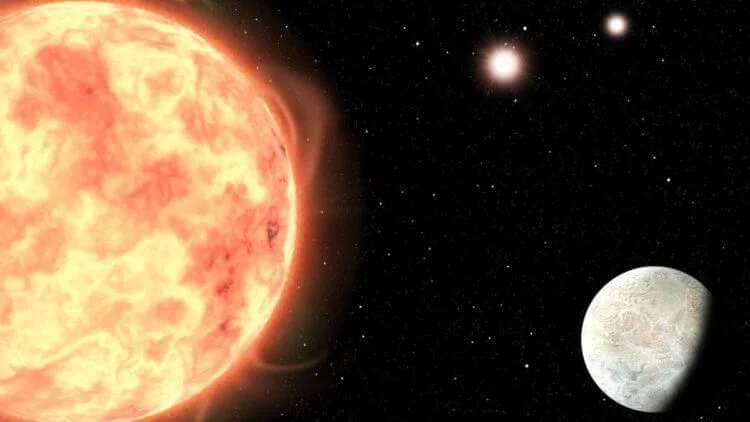

На расстоянии около 22 световых лет от нашего Солнца размещена планета под названием LTT1445Ab. Вокруг нее расположены сразу три звезды, которые представляют собой своего рода копии Солнца. Планета примерно в 1,35 раза больше Земли
и в 8 раз ее массивнее и получает при этом в 5 раз больше солнечного излучения от своих звезд.
Поскольку эта экзопланета расположена не так далеко (некоторые планеты находятся в сотнях световых лет от Солнца),
это дает астрономам уникальную возможность тщательно изучить состав ее атмосферы. Сейчас исследователи пытаются найти в ней признаки содержания
кислорода и водяных паров, которые могут указывать на возможное наличие жизни. Но не стоит надеяться найти на экзопланете какие-либо следы потенциальных
организмов: крайне высокие температуры и высокий уровень радиации делают это место абсолютно непригодным
для возникновения жизни. Все-таки освещение сразу тремя «Солнцами» не прошло бесследно.
